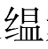
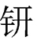
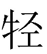

《汉志》之叙小说家，以为“出于稗官”，如淳曰，“细米为稗。街谈巷说，甚细碎之言也。王者欲知里巷风俗，故立稗官，使称说之。”（本注）其所录小说，今皆不存，故莫得而深考，然审察名目，乃殊不似有采自民间，如《诗》之《国风》[74]者。其中依托古人者七，曰：《伊尹说》，《鬻子说》，《师旷》，《务成子》，《宋子》，《天乙》，《黄帝》。记古事者二，曰：《周考》，《青史子》，皆不言何时作。明著汉代者四家，曰：《封禅方说》，《待诏臣饶心术》，《臣寿周纪》，《虞初周说》。《待诏臣安成未央术》与《百家》，虽亦不云何时作，而依其次第，自亦汉人。
《汉志》道家有《伊尹说》[75]五十一篇，今佚；在小说家之二十七篇亦不可考，《史记》《司马相如传》注引《伊尹书》曰，“箕山之东，青鸟之所，有卢橘夏熟。”当是遗文之仅存者。《吕氏春秋》《本味篇》[76]述伊尹以至味说汤，亦云“青鸟之所有甘栌”，说极详尽，然文丰赡而意浅薄，盖亦本《伊尹书》。伊尹以割烹要汤[77]，孟子尝所详辩，则此殆战国之士之所为矣。
《汉志》道家有《鬻子》二十二篇，今仅存一卷，或以其语浅薄，疑非道家言。然唐宋人所引逸文，又有与今本《鬻子》颇不类者，则殆真非道家言也。
武王率兵车以伐纣。纣虎旅百万，阵于商郊，起自黄鸟，至于赤斧，走如疾风，声如振霆。三军之士，靡不失色。武王乃命太公把白旄以麾之，纣军反走。（《文选李善注》及《太平御览》三百一）
青史子为古之史官，然不知在何时。其书隋世已佚，刘知几《史通》[78]云“《青史》由缀于街谈”者，盖据《汉志》言之，非逮唐而复出也。遗文今存三事，皆言礼，亦不知当时何以入小说。
古者胎教，王后腹之七月而就宴室，太史持铜而御户左，太宰持斗而御户右，太卜持蓍龟而御堂下，诸官皆以其职御于门内。比及三月者，王后所求声音非礼乐，则太史

瑟而称不习，所求滋味者非正味，则太宰倚斗而不敢煎调，而言曰，“不敢以待王太子。”太子生而泣，太史吹铜曰，“声中某律。”太宰曰，“滋味上某。”太卜曰，“命云某。”然后为王太子悬弧之礼义。……（《大戴礼记》《保傅篇》，《贾谊新书》《胎教十事》）古者年八岁而出就外舍，学小艺焉，履小节焉；束发而就大学，学大艺焉，履大节焉。居则习礼文，行则鸣珮玉，升车则闻和鸾之声，是以非僻之心无自入也。……古之为路车也，盖圆以象天，二十八橑以象列星，轸方以象地，三十幅以象月。故仰则观天文，俯则察地理，前视则睹和鸾之声，侧听则观四时之运：此巾车教之道也。（《大戴礼记》《保傅篇》）
鸡者，东方之牲也。岁终更始，辨秩东作，万物触户而出，故以鸡祀祭也。（《风俗通义》八）
《汉志》兵阴阳家有《师旷》[79]八篇，是杂占之书；在小说家者不可考，惟据本志注，知其多本《春秋》而已。《逸周书》《太子晋》篇记师旷见太子，聆声而知其不寿，太子亦自知“后三年当宾于帝所”，其说颇似小说家。
虞初事详本志注，又尝与丁夫人[80]等以方祠诅匈奴大宛，见《郊祀志》，所著《周说》几及千篇，而今皆不传。晋唐人引《周书》者，有三事如《山海经》及《穆天子传》，与《逸周书》不类，朱右曾[81]（《逸周书集训校释》十一）疑是《虞初说》。
山，神蓐收居之。是山也，西望日之所入，其气圆，神经光之所司也。（《太平御览》三）
天狗所止地尽倾，余光烛天为流星，长十数丈，其疾如风，其声如雷，其光如电。（《山海经》注十六）
穆王田，有黑鸟若鸠，翩飞而跱于衡，御者毙之以策，马佚，不克止之，踬于乘，伤帝左股。（《文选李善注》十四）
《百家》者，刘向《说苑》[82]叙录云，“《说苑杂事》，……其事类众多，……除去与《新序》复重者，其余者浅薄不中义理，别集以为《百家》。”《说苑》今存，所记皆古人行事之迹，足为法戒者，执是以推《百家》，则殆为故事之无当于治道者矣。
其余诸家，皆不可考。今审其书名，依人则伊尹鬻熊师旷黄帝，说事则封禅养生，盖多属方士假托。惟青史子非是。又务成子名昭，见《荀子》，《尸子》尝记其“避逆从顺”之教[83]；宋子名

，见《庄子》，《孟子》作宋
，《韩非子》作宋荣子，《荀子》引子宋子曰，“明见侮之不辱，使人不斗”[84]，则“黄老意”，然俱非方士之说也。注 释
[74] 国风 《诗经》组成部分，大多是周初至春秋中期民歌。《汉书·艺文志》载：“古有采诗之官，王者所以观风俗、知得失，自考正也。”
[75] 《伊尹说》 《汉书·艺文志》道家类作《伊尹》。其遗文以《吕氏春秋·本味》所引者最为重要。
[76] 《吕氏春秋》 战国末秦相吕不韦集门客共同编撰，《汉书·艺文志》著录二十六卷，共一六〇篇。《本味篇》，见《吕氏春秋·孝行览》，记伊尹历举各地山珍海味，谓仅天子之国始能享受，劝说汤改革政治，以取天下。
[77] 割烹要汤 《孟子·万章》：“万章问曰：‘人有言，伊尹以割烹要汤，有诸？’孟子曰：‘否，不然！伊尹耕于有莘之野，而乐尧舜之道焉。……吾闻其以尧舜之道要汤，未闻以割烹也’。”
[78] 刘知几（661—721） 字子玄，唐彭城（今江苏徐州）人。曾任著作郎、左史等官，多次参加官修史书。所撰《史通》，系我国第一部史籍评著。二十卷，分内外篇，内篇论史家体例，外篇论史籍源流得失。又，“《青史》由缀于街谈”，见刘勰《文心雕龙·诸子篇》，“由”原作“曲”。
[79] 兵阴阳家 即兵书中的阴阳家。《汉书·艺文志》：“阴阳者，顺时而发，推刑德，随斗击，因五胜，假鬼神而为助者也。”唐颜师古注：“五胜，五行相胜也。”《师旷》，《汉书·艺文志》著录小说六篇，已散佚。师旷，字子野，春秋冀州南和（今河北南和）人。晋国主乐大师，活动时代略早于孔子。
[80] 丁夫人 《汉书·郊祀志》载：武帝太初元年（前104），西伐大宛，“丁夫人与雒阳虞初等以方祀诅匈奴、大宛焉。”唐韦昭注：“丁，姓；夫人，名也。”
[81] 朱右曾 字尊鲁，清嘉定（今属上海）人。道光进士，曾官贵州遵义知府。撰有《逸周书集训校释》、《左氏传解谊》等。
[82] 《说苑》 西汉刘向撰，《隋书·经籍志》著录二十卷。分类纂述春秋战国至秦汉间历史故事，杂以议论。《说苑杂事》，即《说苑》。《新序》，刘向撰，《隋书·经籍志》著录三十卷，内容体例与《说苑》相似。
[83] 务成子 见《荀子·大略篇》：“不学不成。尧学于君畴，舜学于务成昭，禹学于西王国。”《尸子》卷下引务成子教舜曰：“避天下之逆，从天下之顺，天下不足取也。”《尸子》，战国鲁国尸佼撰，《汉书·艺文志》著录二十篇，已散佚。今本《尸子》疑为魏晋时人依托补撰。
[84] “明见侮之不辱，使人不斗” 语见《荀子·正论》。